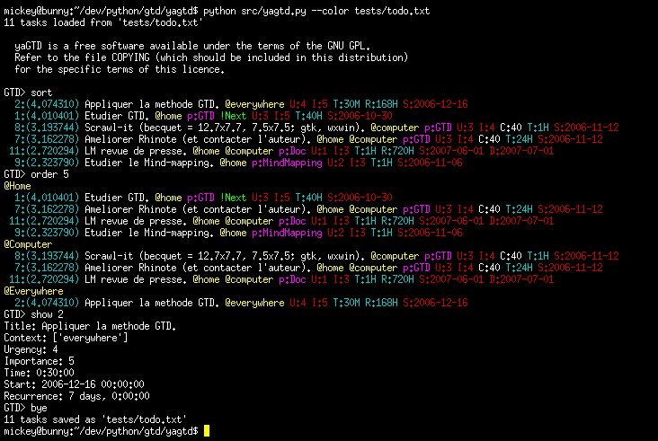

A primitive Getting Things Done to-do list manager.
| Author: | MiKael NAVARRO <klnavarro@gmail.com>. |
|---|
yaGTD project is a very simple utility designed to make the management of your to-do list quick and easy.
I have several long-term projects at work, and I need reminders to spend time on the important things that aren't too urgent. When, in 2006, I read David Allen's personal-productivity book Getting Things Done, I tried to apply this method on my personal projects; So, I needed a 'trusted system' ...
But why another to-do list? There are hundreds of to-do lists on the web, some commercial, some free, some need on-line connection while other not, some are integrated into an email client and some web sites were built to manage your to-do list, but I was looking for something a little different.
What I wanted was something lightweight and flexible, a simple way to carry and maintain my tasks around on a USB stick. The program needed to be capable of running on different platforms and must not depend on any data format or any web connection.
I tried several software for managing to-do lists, including the excellent iKog and pyGTD [1] programs, but I found that the former was missing the notion of urgency and importance (preached by Stephen Covey into Seven Habits of Highly Effective People), and the latter made it too laborious to maintain data.
| [1] | pyGTD is now part of VimGTD (original ^^). |
And so, after several months of occasional experimentation, I decided to write my own tool that includes the easy to use but powerful commmand line interface from iKog and the management of Covey concepts from pyGTD.
To summarize, if you are looking for fancy menus and windows, go away; But, if you are comfortable at the command line a simple plain text is an age-old but perfect method for tracking your stuff, and yaGTD can help you to manage efficiently this file.
yaGTD is a free software available under the terms of the GNU General Public Licence. Refer to the file COPYING (which should be included in this distribution) for the specific terms of this licence.
Python 2.3 or later must be installed on your system.
Theorically should work on all platforms.
See INSTALL file for more details on how to deploy yaGTD.
Simply run:
$ python /path_to_the_file/yagtd.py
Use --help flag for more options; Available commands, with a short description, are accessible interactively with the help or the ? command; A summary of important commands and options is available with the usage command.
To add a task, simply type add followed by the task you want to add:
GTD> add Etudier GTD.
Then, to see all tasks in your todo list, enter list command.
Add another task:
GTD> add Etudier le Mind-mapping.
Contexts are specified with the @ character:
GTD> add Etudier le Mind-mapping. @home GTD> add Ameliorer Rhinote (et contacter l'auteur). @computer @home
Archive a task to a reference memo with the ref: keyword:
GTD> add pyGTD, DevTodo, todotxt. ref:GTD
You can, optionaly, add a task with a target (due) date with the D:yyyy-mm-dd notation:
GTD> add Etudier GTD. @home p:GTD D:2006-12-16
And set the time required for a task by adding T:n[WDHM] keyword.
W: n weeks D: n days H: n hours M: n minutes
P.S. some shorcuts start, end, due, duein commands are available for ease of use.
We find here additional options from Stephen Covey:
To see all or first #nb open tasks:
GTD> list [nb]
Notice that all task are ordered by creation #id.
To see all tasks (even if completed):
GTD> listall [nb]
To list tasks without context, i.e. in the inbox:
GTD> listinbox [#nb]
P.S. to see references:
GTD> listref [nb]
Sort tasks by priority (tasks appear only after Start date):
GTD> sort [nb]
Remark: Priority is computed from Urgency, Importance and Due date [2]
| [2] | see source code gtd.py |
Show todos only in today, and due in today:
GTD> today [nb]
To see tasks overdue or coming up:
GTD> overdue GTD> deadlines
Show details of task #nb:
GTD> show nb
And, display status (percent complete) of your projects:
GTD> status
Or, display contexts and next task for each context:
GTD> contexts
To see your tasks by context (tasks appear only after Start date):
GTD> order [nb]
If number is specified display maximum #nb tasks for each contexts.
Remark: Tasks are sorted by priority too.
To have a set of tasks in memory:
GTD> select id GTD> deselect id GTD> selected
Remark: The list is not saved!
To help find tasks matching the given expression, for exemple to retrieve all tasks into the specified context, project or status:
GTD> search @home GTD> search p:GTD GTD> search !Next
You can also, give a regular expresion:
GTD> search .*gtd
Remark: Do not list completed tasks, use searchall command instead.
To replace the entire task #id by a new one:
GTD> replace id new task
Ex:
GTD> replace 1 Etudier la methodology GTD. @home p:GTD
Interactively edit the task #id:
GTD> edit id
Then, validate modifications by pressing <return>:
GTD edit> editted task
Ex:
GTD> edit 1 GTD edit> Etudier la methode GTD. @home p:GTD
Add / change elements of task #id but leave each other unchanged:
GTD> modify id elements to change
Ex:
GTD> modify 3 @online
And, to modify elements of a set of tasks:
GTD> modifyall regexp elements to change
Ex:
GTD> modifyall p:GTD U:4 I:2
Add new elements to task #id but leave existing elements unchanged:
GTD> append id new elements
Ex:
GTD> append 2 @computer
And, to add new elements to several tasks:
GTD> appendall regexp new elements
Ex:
GTD> appendall p:GTD ref:documentation
Add more text (description) to task #id:
GTD> extend id additional notes
Be careful: for the moment, extend the task title (only)!
Remove the given task #id:
GTD> del id
Close the given task #id:
GTD> close id
Remark: If the task has a recurrent time-delta, the task is automatically reprogrammed.
Save to todo.txt filename:
GTD> save [path/to/todo.txt]
Load from a todo.txt filename:
GTD> load path/to/todo.txt
Export into printable format (ReST):
GTD> print [path/to/todo.rest]
Move done items from todo.txt to done.txt:
GTD> archive
-- MiKael NAVARRO